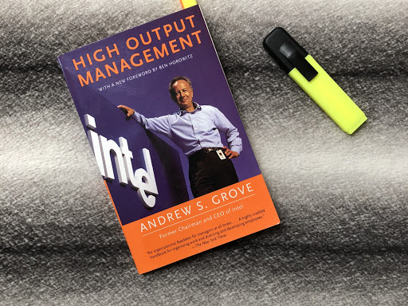

Thoughts on High Output Management
High Output Management is a highly regarded management book in the tech industry (well at least at Hacker News), and so when I looked for reading materials to learn new management ideas, it was the first choice. Andrew Grove’s writing is very down to earth and practical and it opened up for me new ways to think about management. I’ll share the highlights with you here:

Variable Inspection
Later, when we examine managerial productivity, we’ll see that when a manager digs deeply into a specific activity under his jurisdiction, he’s applying the principle of variable inspection. If the manager examined everything his various subordinates did, he would be meddling, which for the most part would be a waste of his time.
I found this very relevant to code reviews. I can’t review all the code my team produces, I’ll become a bottleneck if I try to do so. On the other hand, I can’t just say: “write good code”, and go do my thing. Variable inspection can go a long way here, doing in-depth code reviews every once so often can help me understand what is going on in the codebase, and on the other, to promote my views and philosophy about coding.
This is something I already did to an extent, but having read about it made it become a conscious part of my routine.
Meetings are not so bad after all
Before you are horrified by how much time I spend in meetings, answer a question: which of the activities—information-gathering, information-giving, decision-making, nudging, and being a role model—could I have performed outside a meeting? The answer is practically none. Meetings provide an occasion for managerial activities. Getting together with others is not, of course, an activity—it is a medium.
Developers hate meetings. I hated meetings. At the beginning of my managerial role, I tried to avoid those as much as possible (and on the way might have hurt some people’s feelings). These days, I understand their importance, after most of what a manager does is exactly what Grove describes: “information-gathering, information-giving, decision-making, nudging, and being a role model”. These roles can be also taken care of in emails and such, but in truth, meetings are very effective at taken care of these aspects.
The thing is, that people (mangers!) a lot of the time ignore the bad aspects of meetings, and are not considerate enough of other people’s time. The gist for me is to have effective meetings and not just “not that we are here, what should we talk about” kind of meetings.
Forecasting
From my experience a large portion of managerial work can be forecasted. Accordingly, forecasting those things you can and setting yourself up to do them is only common sense and an important way to minimize the feeling and the reality of fragmentation experienced in managerial work. Forecasting and planning your time around key events are literally like running an efficient factory.
This. Managing can feel hectic at times. At the end of the day, the manager is responsible for the team’s success, and if you need to be involved in every task for it to succeed, you’ll get burned out pretty quickly. I think that many managers are in a constant on-call mode, everything needs their attention.
What I liked about Grove’s approach is that he treats management like another engineering practice - in this case running a production line in a factory. The idea is to design a management system that is predictable and efficient. Again, this is something I had a hunch about myself previous to reading the book, see my meeting protocols blog post, but with Grove’s support, I started to view my role as the person in charge of setting the optimal environment for the team to function and less as the all-mighty manager that is responsible for the success of every task. Success will come when work is organized correctly. And so, in the team meetings, when we discuss what each person is doing this week, I present my work pipeline optimization tasks.
Because manufacturing people trust their indicators, they won’t allow material to begin its journey through the factory if they think it is already operating at capacity. If they did, material might go halfway through and back up behind a bottleneck. Instead, factory managers say “no” at the outset and keep the start level from overloading the system… It is important to say “no” earlier rather than later because we’ve learned that to wait until something reaches a higher value stage and then abort due to lack of capacity means losing more money and time… There is an optimum degree of loading, with enough slack built in so that one unanticipated phone call will not ruin your schedule for the rest of the day. You need some slack.
What follows is that the way to reach optimal performance is to keep the system at capacity and to include some slack in it to allow for agility. Failing to do so will eventually create bottlenecks that will be much more expensive than the gain that is possible by crumping more work in.
This insight gets lost a lot of time in our daily work. Managers feel the pressure to excel and deliver, but are ignoring the price of congestion in the system. Hence once surprises arrive (and they will), havoc starts. There is however the other type of mangers, that prefer to have a lot of slack since they don’t want to commit and fail. Estimating is an art.
Task-relevant maturity
The fundamental variable that determines the effective management style is the task-relevant maturity of the subordinate.
A repeating question in my daily routine is to determine how involved do I need to be in ongoing tasks. Too involved - micromanaging, too removed - can be reckless. The task-relevant maturity parameter is a good benchmark to measure against and to communicate your choices. I felt Grove was writing about me when he mentioned the manager’s inclination to avoid micro-managing:
That mode is one that we don’t think an enlightened manager should use. As a result, we often don’t take it up until it is too late and events overwhelm us.
Well, that happened to me more than once! Of course, I want to be an enlightened manager and give space, so moving the discussion from the emotional perspective into the practical one, helps me a lot in better decision making.
To write this post, I went through my highlights from the book, and actually, there are many more good points Grove makes. The book is full of practical management wisdom and so I can only thank Grove for taking the time to write it.